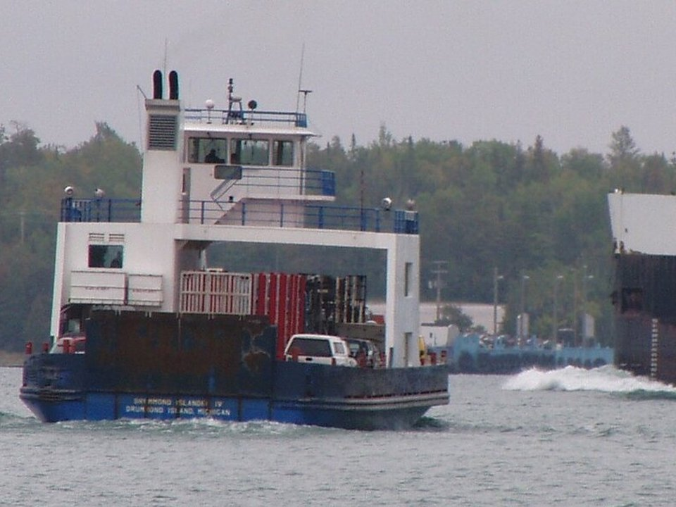

Island resort · Golf
Drummond Island Resort
Lodge rooms and cabins with The Rock golf course and a private beach.
Official details for Drummond Island ResortA wild Great Lakes island you can land on.
Drummond Island sits in Lake Huron at the eastern end of the Upper Peninsula, a short ferry ride from DeTour Village or a quick landing at its own airport. Most of it is state forest, limestone shoreline and quiet coves. Stay at the Drummond Island Resort with its golf course carved through limestone, paddle the heritage water trail, look for fossils on the shore and watch freighters pass in the channel.

Time illustration: direct distance at 150 KTAS plus 15 minutes for departure and arrival, matching the discovery page. Use ForeFlight for your actual flight plan.
DRM, Drummond Island Airport, is a non-towered field with a 4,000-foot paved runway near the resort. Floatplanes and amphibians can use D22 (Yacht Haven) or MI4 (LaPoint).
Drummond Island Airport, Drummond Island, MI
Remote island: confirm fuel and a ride with the airport or the resort before you go. No live fuel price is shown.
Upper Great Lakes weather: fog off Lake Huron, fast-moving fronts, gusty winds over open water, and ice from about December to April. About 770 nm from Myrtle Beach: plan a fuel stop and three nights.
Drummond Island, MI · manager 906-493-5232
Water lanes: N/S 7,000 × 200 ft; NE/SW 6,000 × 200 ft; NW/SE 5,000 × 200 ft. LaPoint (MI4), manager 906-493-5445, also has three lanes.
VFR operations only. Monitor the Drummond Island Airport (DRM) CTAF; DRM is about 1.5 miles south. (FAA chart supplement remarks.)
Customs is available at Yacht Haven with prior notice (CBP 906-632-7221; a user-fee decal is required). Request service at least an hour ahead; summer hours are longest from June to mid-September.
Water landing rules, conditions and docking change; call the base and check the chart supplement before you go.
Rates and availability need travel dates. Summer and fall color weekends book early.
Lodge rooms and cabins with The Rock golf course and a private beach.
Official details for Drummond Island ResortCabins, cottages and lodges around the island.
Visit Drummond Island for More places to stayPrices and availability for your dates, through our partner Stay22. This is an affiliate link: we may earn a commission at no cost to you. The picks above are never paid.
Reserve weekend dinners.
Pins Bar & Grill at the resort.
Official details for Drummond Island ResortIsland cafés, grills and bars.
Visit Drummond Island for More restaurantsPlan around the weather on the lake.
Look for fossils on the limestone shores and the rare alvar plains.
Visit Drummond IslandThis prototype links to the local visitor site. It does not yet match events to your travel dates.
Paddling, golf and long evenings.
Visit Drummond Island for Island seasonMaples and birches on the island.
Visit Drummond Island for Fall colorFestivals and community events.
Visit Drummond Island for Island eventsCheck the local calendar when choosing a weekend, and confirm dates and tickets with the organizer.
A sample island weekend. Plan three nights for the flight. No bookings or availability confirmed.
Land at DRM or D22 mid-morning.
Lunch at Pins Bar & Grill.
Freighter watching, then back to the airport.
Land at DRM or D22, subject to weather, your fuel stop and your actual flight plan.
Check in and walk to the beach.
Dinner at Pins Bar & Grill.
Paddle the water trail.
A round at The Rock.
Dinner in town.
Freighter watching on the passage.
Allow time at the base or airport.
Fronts move quickly over the lakes; leave early.
Paddle the heritage water trail.
A round at The Rock.
Dinner on the island.
These details make the difference between an appealing list and a usable getaway.
Lodging and a car first.
About 770 nm. Plan a fuel stop and three nights.
VFR only; customs available at Yacht Haven with prior notice.
June to early October.
Picks and links reviewed by WingAway Weekends. Hours, prices, menus and availability change often, so confirm directly with each place before booking. Spotted something out of date, or have a favorite we missed? Email us at hello@wingawayweekends.com.
WingAway Weekends helps you discover the destination. Use ForeFlight and current official aviation information for route, performance, weather, NOTAMs and preflight decisions. Flight planning and PIC responsibility stay with the pilot.